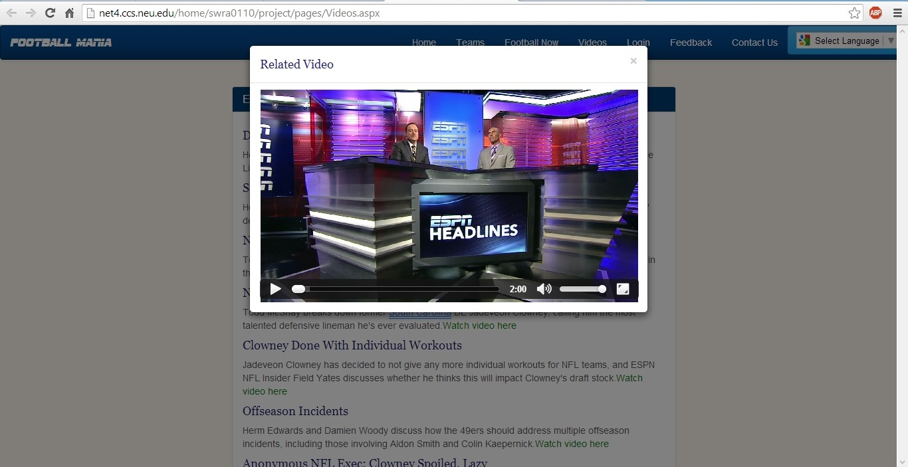

This page has information from ESPN Now API. I am using javascript and jQuery's ajax() function to get data from API.
The coolest thing is that I am getting video url from the API and I have integrated it using HTML5's video tag which pops up
in a modal box - a feature of Bootstrap that I am using.
The design decision to use HTML5's video tag was taken because it is supported by majority of the web browsers.
Below is a screenshot of the videos page with video popup:

View Source here
Videos Page
Javascript File